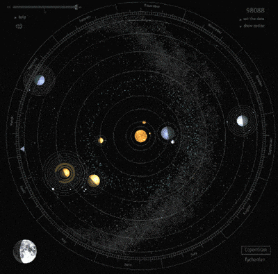

Prezentare generala
Sistemul solar este un ansamblu component al Galaxiei Calea Lactee, fiind alcatuit din Soare, planete, sateliti naturali, comete, asteroizi, meteori,praf, gaze si materie interplanetara. Mai general, o stea împreuna cu alte obiecte ceresti ce graviteaza în jurul sau se numeste sistem stelar, termenul „solar” referindu-se strict la steaua numita „Soare” (din lat. sol). In cadrul galaxiei noastre, Calea Lactee, sistemul solar se afla pe unul din bratele exterioare, numit Bratul Orion sau „pintenul local”, intr-o regiune cu o densitate de materie relativ mica, lucru care se presupune ca a avut efecte benefice asupra aparitiei vietii pe Pamant. Soarele impreuna cu intregul sistem solar se afla intr-o miscare de revolutie in jurul centrului galaxiei, aflat la o distanta de 25.000—28.000 ani-lumina (aproximativ jumatate din raza galaxiei), cu o perioada de revolutie de aproximativ 225-250 milioane de ani (anul galactic al sistemului solar). Viteza de deplasare pe aceasta orbita circulara este de aproximativ 220 km/s.

Formarea si evolutia sistemului solar este estimata ca ar fi inceput acum 4,55 - 4,56 miliarde ani in urma, prin colapsul gravitational al unei mici parti dintr-un urias nor molecular. Cea mai mare parte din materia aparuta in urma colapsului s-a adunat in centru, formand Soarele, in timp ce restul materiei s-a aplatizat sub forma unui disc protoplanetar din care s-au format planetele, satelitii, asteroizii si alte mici corpuri ceresti din Sistemul Solar.
Cel mai masiv obiect este steaua centrala - Soarele, al doilea obiect ca masa fiind planeta Jupiter. Cele patru planete interioare mici, Mercur, Venus, Pamantul si Marte, numite planete terestre / planete telurice, sunt compuse in principal din roci si metal. Cele patru planete exterioare, numite giganti gazosi, sunt mult mai masive decat cele telurice. Cele mai mari doua planete, Jupiter si Saturn, sunt compuse in principal din hidrogen si heliu; cele doua planete mai indepartate, Uranus si Neptun, sunt compuse in mare parte din substante cu o temperatura de topire relativ ridicata (comparativ cu hidrogenul si heliu), numite gheturi, cum ar fi apa, amoniacul si metanul. Ele sunt denumite „giganti de gheata” (termen distinct de cel de „gigant gazos”). Toate planetele au orbite aproape circulare dispuse intr-un disc aproape plat numit plan ecliptic.
Structură și compoziție
Componentul principal al sistemului solar este Soarele, o stea de tip G2 din secvența principală ce conține 99,86% din masa cunoscută a sistemului și îl domină din punct de vedere gravitațional. Cele mai mari patru corpuri ce orbitează în jurul Soarelui, giganții gazoși, constituie circa 99% din masa rămasă, Jupiter și Saturn deținând împreună mai mult de 90%.
Majoritatea obiectelor mari care orbitează în jurul Soarelui se află în apropierea planului orbitei Pământului, cunoscut și ca ecliptică. Orbitele planetelor sunt foarte apropiate de ecliptică în timp ce orbitele cometelor și ale obiectelor din centura Kuiper au adesea unghiuri de intersecție cu ecliptica destul de mari. Toate planetele și majoritatea celorlalte obiecte orbitează în jurul Soarelui în aceeași direcție în care se rotește acesta (în sens invers acelor de ceasornic, privit de deasupra polului nordic solar). Există excepții, cum ar fi cometa Halley.
Structura generală a regiunilor cartografiate ale sistemului solar constă din: steaua centrală – Soarele, patru planete interioare relativ mici înconjurate de o centură de asteroizi din rocă și, alți patru giganți de gaz – înconjurați la rândul lor de centura Kuiper și alte obiecte înghețate. Sistemul Solar interior include primele patru planete terestre și centura de asteroizi. Sistemul solar exterior se află dincolo de centura de asteroizi, incluzând cei patru giganți gazoși (cunoscuți și ca planete joviene).[24] După descoperirea centurii Kuiper, zonele mărginașe ale sistemului solar sunt considerate a fi o regiune distinctă, aflată dincolo de orbita planetei Neptun.
Legile lui Kepler cu privire la mișcarea planetară descriu orbitele obiectelor din jurul Soarelui. Urmând legile lui Kepler, fiecare dintre aceste obiecte se mișcă de-a lungul unei elipse, într-unul dintre focarele acesteia aflându-se Soarele. Obiectele mai apropiate de Soare (cu o semiaxă majoră mai mică) se deplasează mai repede, fiind influențate mai puternic de către gravitația Soarelui. Pe o orbită eliptică, distanța unui corp față de Soare variază de-a lungul perioadei sale de revoluție (denumită „an”). Cel mai apropiat punct față de Soare de pe orbita unui obiect este numit periheliu, în timp ce punctul cel mai îndepărtat se numește afeliu. Orbitele planetelor sunt aproape circulare, dar multe comete, asteroizi și obiecte din cadrul centurii Kuiper au orbite foarte eliptice. Pozițiile corpurilor în sistemul solar pot fi prezise folosindu-se modele numerice.